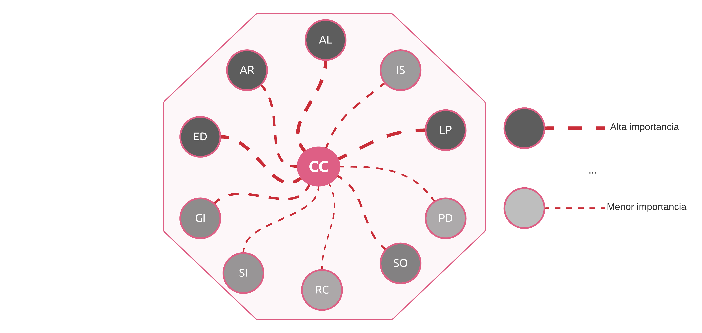
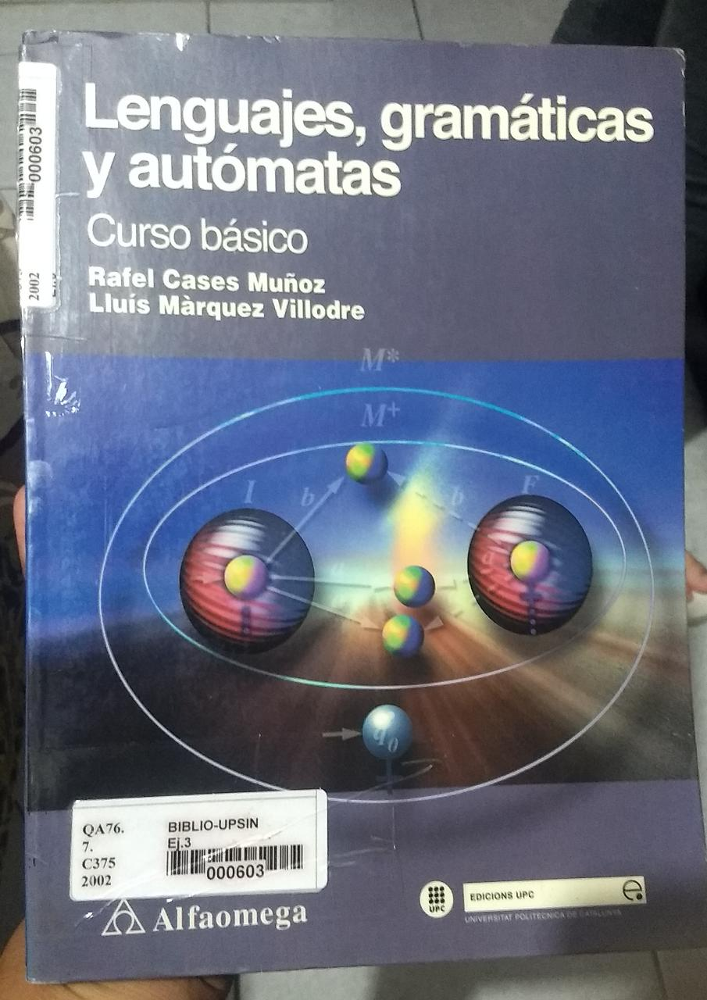

Qué es esto:
Mi intención aquí es escribir y hacer notas referente a lo que aprenda sobre Ciencias de la Computación por mi cuenta.
Quiero tener buenas bases sobre las Ciencias de la Computación, es algo que no domino para nada y por tal razón he optado
en hacer este apartado para motivarme a aprender más sobre este maravilloso campo.
Áreas de las Ciencias de la Computación:
Las siguientes son algunas de las áreas de la Ciencias de la Computación, definidas por la Association for Computing Machinery (ACM):

Imagen obtenida del Diccionario de Computación de Camilo. Las áreas son las siguientes:- AL (Algoritmos y complejidad): Técnicas, análisis y complejidad de los algoritmos.
- AR (Arquitectura y organización): Representación y organización de los datos, a bajo nivel, en un ordenador.
- ED (Estructuras discretas): Estructuras de información finitas. Estructuras de datos y conceptos desde las matemáticas discretas, fundamentales en la informática.
- GI (Gestión de la información): Sistema de modelado y almacenamiento de datos (bases de datos).
- SI (Sistemas inteligentes): Sistemas de optimización, probabilista y heurísticas, para resolver problemas complejos.
- RC (Redes y comunicación): Comunicación entre ordenadores a través de la red, y cómo es tratada la información que es trasmitida.
- SO (Sistemas operativos): Funcionamiento, organización y seguridad de los sistemas operativos.
- PD (Computación paralela y distribuida): Estudio de sistemas que hacen uso de los recursos del cpu (múltiples núcleos) y que trabajan de manera distribuida.
- LP (Lenguajes de programación): Sobre los lenguajes de programación existente, además del estudio de su diseño e implementación.
- IS (Ingeniería de software): Requerimientos, metodología, principios y evaluación de un proyecto de software.
Lenguajes y Autómatas
01/09/2022
Hoy inicié un nuevo curso escolar y llevaré una materia llamada «Lenguajes y Autómatas», me llamó bastante la atención y fue demasiado emocionante saber de qué trataba la materia.
Para ser sincero no tengo idea si el plan de estudios es correcto, el objetivo final del curso es hacer un compilador. Así
que para estar más informado acerca de lo que trata dicha materia, saqué un libro de la biblioteca llamado «Lenguajes, gramátiacas y autómatas»,
adjunto una fotografía del libro:

Hoy comenzaré mi viaje.